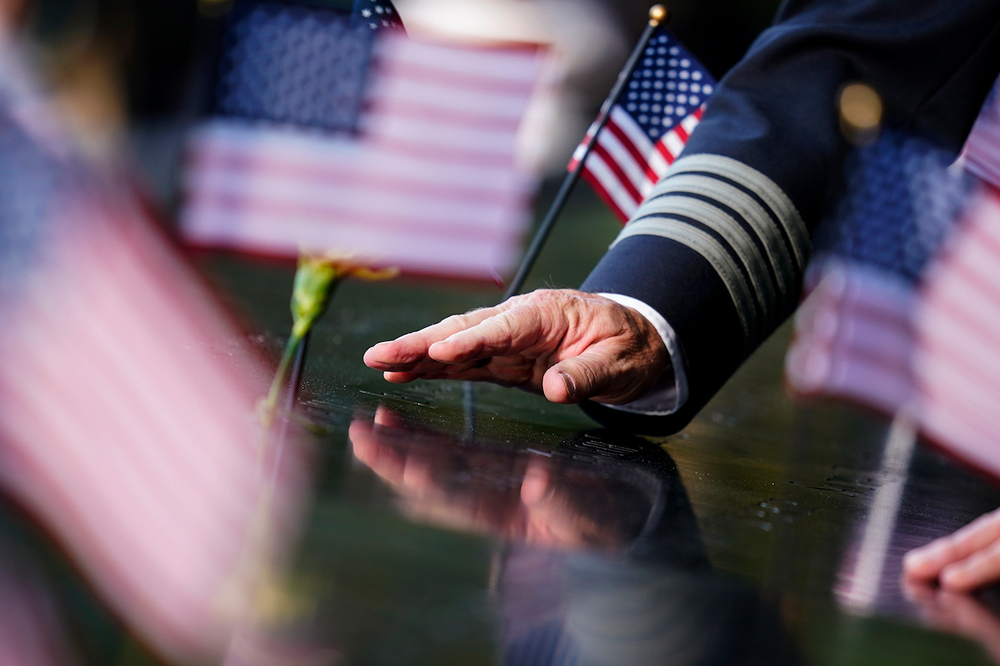

Highlights Of Politics Today
The Pandemic

Dread at 30,000 ft: Inside the increasingly violent world of US flight attendants
As the pandemic spread, the perks of Amirzadeh's job diminished. Now restricted to domestic US flights, her work involves navigating not only the fear of catchingCovid-19, but also the recent uptick in disruptive passengers. read more about this
September 11th , the day to remember
"9/11 is still killing," Sept. 11 first responder and survivor advocate says
"We gave hope to a broken city 20 years ago, and we're paying for it with our lives. And the first 20 years were hard on us. The next 20 years are going to decimate the 9/11 responder community. And I pray that our federal government evolves us with, as we evolve for the worse," Feal told CNN. read more about thisTrump's House
House Minority Leader Kevin McCarthy speaks during a news conference at the US Capitol on July 1, 2021.
Half of the 10 House Republicans who voted to impeach Trump for inciting the January 6 insurrection -- Reps. David Valadao of California, Jaime Herrera Beutler of Washington state, John Katko of New York, and Fred Upton and Peter Meijer, both of Michigan -- participate in a joint fundraising committee with McCarthy and his leadership PAC, which has raised roughly $100,000 for each of the five campaigns in the first half of the year.read more about this20th anniversary of the 9/11 attacks
Bush alludes to US Capitol rioters when condemning violent extremists behind 9/11 attacks
Hassan A.
Former President George W. Bush called on Americans Saturday to confront domestic violent extremists, comparing them to violent extremists abroad and warning that they are "children of the same foul spirit."In a speech marking the 20th anniversary of the 9/11 attacks, Bush said the US has seen "growing evidence that the dangers to our country can come not only across borders, but from violence that gathers within." "There is little cultural overlap between violent extremists abroad and violent extremists at home," Bush said. "But in their disdain for pluralism, in their disregard for human life, in their determination to defile national symbols, they are children of the same foul spirit."
"And it is our continuing duty to confront them," he added.
Bush's speech at the Flight 93 Memorial in Shanksville, Pennsylvania, came eight months after violent insurrectionists breached the US Capitol on January 6 in an attempt to stop Congress from certifying the 2020 election for President Joe Biden.
Law enforcement officials are bracing for potential clashes and unrest during a right-wing rally in Washington, DC, scheduled for September 18, which is meant to support insurrectionists charged in the Capitol riots, according to an internal Capitol Police memo reviewed by CNN.
Bush on Saturday lamented the division in the United States, contrasting the current political climate to the spirit of unity that he said he observed in the wake of the September 11 attacks. "A malign force seems at work in our common life that turns every disagreement into an argument, and every argument into a clash of cultures. So much of our politics has become a naked appeal to anger, fear, and resentment," Bush said. "That leaves us worried about our nation and our future together."
He said he didn't have "explanations or solutions," but went on to recount what he said was the America he saw in the aftermath of the 2001 terrorist attacks. "At a time when religious bigotry might have flowed freely, I saw Americans reject prejudice and embrace people of Muslim faith. That is the nation I know," Bush said.
"At a time when nativism could have stirred hatred and violence against people perceived as outsiders, I saw Americans reaffirm their welcome to immigrants and refugees. That is the nation I know," Bush added. His comments come as some in his own party have raised concerns about Afghan refugees being resettled in the United States after the US withdrew from Afghanistan last month.
Biden later Saturday offered praise for the former president's remarks, telling reporters during a visit to the Shanksville Volunteer Fire Department that he thought Bush "made a really good speech today, a genuinely good speech, about who we are."
In addition to Biden and Bush, former President Barack Obama participated in memorial events Saturday, bringing together all the US leaders of the post-9/11 era except former President Donald Trump, who visited the New York City Police Department's 17th precinct in Manhattan's Midtown East neighborhood later Saturday. Trump, who is providing commentary on a boxing match Saturday, commemorated the 20th anniversary in a short video in which he praised first responders, and also lambasted Biden for the handling of the withdrawal from Afghanistan.
"Many things were displayed that day, including most importantly the bravery of our police, fire and first responders of every kind. The job they did was truly unbelievable," Trump said of September 11 in the video. "It is also a sad time for the way our war on those that did such harm to our country ended last week."
It was the Trump administration that signed the February 2020 agreement with the Taliban for the US to remove troops in Afghanistan.
Dread at 30,000 ft: Inside the increasingly violent world of US flight attendants
Thank you very much. Laura and I are honored to be with you. Madam Vice President, Vice President Cheney. Governor Wolf, Secretary Haaland, and distinguished guests:Twenty years ago, we all found -- in different ways, in different places, but all at the same moment -- that our lives would be changed forever. The world was loud with carnage and sirens, and then quiet with missing voices that would never be heard again. These lives remain precious to our country, and infinitely precious to many of you. Today we remember your loss, we share your sorrow, and we honor the men and women you have loved so long and so well.
For those too young to recall that clear September day, it is hard to describe the mix of feelings we experienced. There was horror at the scale -- there was horror at the scale of destruction, and awe at the bravery and kindness that rose to meet it.
There was shock at the audacity -- audacity of evil -- and gratitude for the heroism and decency that opposed it. In the sacrifice of the first responders, in the mutual aid of strangers, in the solidarity of grief and grace, the actions of an enemy revealed the spirit of a people. And we were proud of our wounded nation. In these memories, the passengers and crew of Flight 93 must always have an honored place.
Here the intended targets became the instruments of rescue. And many who are now alive owe a vast, unconscious debt to the defiance displayed in the skies above this field. It would be a mistake to idealize the experience of those terrible events. All that many people could initially see was the brute randomness of death. All that many could feel was unearned suffering. All that many could hear was God's terrible silence. There are many who still struggle with a lonely pain that cuts deep within.
In those fateful hours, we learned other lessons as well. We saw that Americans were vulnerable, but not fragile -- that they possess a core of strength that survives the worst that life can bring. We learned that bravery is more common than we imagined, emerging with sudden splendor in the face of death. We vividly felt how every hour with our loved ones was a temporary and holy gift. And we found that even the longest days end.
As a nation, our adjustments have been profound. Many Americans struggled to understand why an enemy would hate us with such zeal. The security measures incorporated into our lives are both sources of comfort and reminders of our vulnerability. And we have seen growing evidence that the dangers to our country can come not only across borders, but from violence that gathers within.
There is little cultural overlap between violent extremists abroad and violent extremists at home. But in their disdain for pluralism, in their disregard for human life, in their determination to defile national symbols, they are children of the same foul spirit. And it is our continuing duty to confront them.